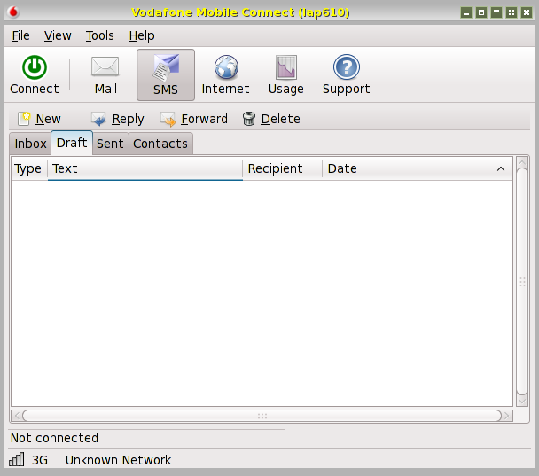

For a while I had some problems with 64GB SD card, but later installed a 32GB faster SD card and that has worked perfectly.
This has made my T-mobile, and Three mifi devices redundant, because it works well on 3G 4G connections and can act as a wifi hot spot. I've used it on trains and at conferences where eduroam was not available.
I mostly use it with wifi at home or on campus so don't need the 4G service much, but when I do, e.g. when travelling, I find the £1.00(GBP) PAYG Data Packs quite convenient: each lasts for 7 days and allows up to 100MB data and plus some minutes of phone calls and several texts -- and I hardly ever need it as a phone. A heavy user of phone, text and mobile wifi might find a more economical solution.
This mostly gives me better value than the Three Mifi device, as the minimum PAYG purchase from Three lasts only one day and costs a lot more, though it does include more data, which I don't normally need within a day.
Someone wrote, in answer to my request for advice
> Slightly off-topic, I've been using a Huawei E583c mifi device in place
> of an E172 usb stick for about 12 months now. I much prefer it, although
> it might not be everyone's choice. Like the usb sticks it has a SIM in
> it. It has an internal battery and can be charged from a mains adapter
> or from the usb port on a laptop. It establishes the data connection and
> then provides wifi to support up to 5 devices. That can be handy if you
> wish to work with others who don't have connectivity. It can be placed
> on a window cill to get a better signal
After doing more research, and since I shall be doing more travelling than usual in the near future, I decided to try the latest version of this, the E586, available only from three at present (as far as I can tell).
http://store.three.co.uk/Mobile_Broadband/MiFi
Sample review here (on dreadful website full of stupid moving
adverts on both sides of text):
http://www.techradar.com/reviews/pc-mac/networking-and-wi-fi/modem-routers/huawei-mifi-e586-1005060/review
(I must replace that review link with one that's less annoying.)
There are different price plans, and for someone in my position, not
using the device except when travelling (which is why I used Pay As You
Go for t-mobile -- which rules out use of skype), it turns out cheapest
to go for a monthly contract, cancelled after one month, followed by
purchase of sims as needed:
MiFi 5GB per month
Price details. £15.99 a month for 5GB per month
49.99 upfront cost for device.
minimal contract 1 month.
So initial purchase, including 1 month+5GB, costs £66 (or a bit more
if you start using the device before the official start date of the
contract).
[Starting then cancelling this was recommended by the person in the Three shop.]
You can cancel the contract with 1 month notice, and after that go for one of the cheaper 12 month 12GB three sims available on Ebay/Amazon.
I can report that the device is much simpler to use than a typical mobile broadband dongle. When switched on it makes its own connection and then provides a normal wireless router (wpa) service: so I used wicd to connect using the essid and password that comes with the sim.
You can then access the device in a browser, using 192.168.1.1 (I don't know if that can be changed), and get information about the connection, current usage total, and also a useful text-messaging interface in the browser (tested by sending messages to and from my orange mobile phone). Since all of that is operating system independent it works out of the box on linux. It supports up to 5 connected devices.
Upstairs in my house download speeds were slightly better than tmobile, but very variable -- between about 600 and 1600 kb/s (mostly at the lower end), upload speeds faster: consistently between 1000 and 1500 kb/s.
Wireless signal strength enabled connection from first floor to hallway and rooms below, but using repeated pings to the device indicated that level dropped faster than when using my normal router Dlink DIR 615.
I don't know what would happen in trains, hotels, etc. if lots of people started using these devices -- would they interfere with one another?
I suspect our computer officers would not allow such devices to be used in our department.
Battery can be charged either via Usb socket or wall charger (includes a usb socket). I don't know how often I'll forget to switch off the device after use and drain the battery. The battery is replaceable, so I suppose that in principle one could have a spare.
If bought in shop you need a debit card for credit check.
Commands for sending text messages and interrogating the system from a text editor (the poplog editor Ved) are available. These commands are not required for using the USB stick to connect to the internet. They provide additional functionality, especially sending and reading text messages via the USB stick (assuming it is already connected as described below).The commands are implemented in Pop-11, the core language of Poplog, but it should be possible for users of other programming languages to copy and edit them, since Pop-11 is quite readable.
pop_mobile_connect.p program file pop_mobile_connect documentation
WARNING 1:NEWS 25 Oct 2009: Use on the continent works
The t-mobile service has an under-18 lock which is turned on by default to prevent access to 'social networks'. This even blocks google mail and signing in to a google account, though not yahoo mail. Blocking google mail, which so many people use now, is stupid and arbitrary (especially when they have the information that I am over 70).The web site says you can remove the block interactively, but that works only for phone users not mobile broadband users. I have complained. Others should too!
After they removed the block I could access google mail when running the t-mobile software on windows, but not when using linux. I don't know why. It just hangs, with no explanation.
T-mobile need to fix their service.
NOTE: some time after I wrote that (and complained to t-mobile) the fault disappeared and I can now connect to google mail, google groups. etc.WARNING 2:
I tried the linux mechanisms below with a newer t-mobile mobile broadband usb stick (model 150) bought for someone to use in hospital (3 months Mobile Broadband plus usb stick for £44.03). This has the Huawei E1630 device (according to the label on the stick)It worked on windows, though only with its own web'n'walk manager, not the older one. However, when I tried it on linux it did not work. I don't know why. It does not switch to modem mode, although the device is recognised.
lsusbproduces (among other things)Bus 001 Device 010: ID 12d1:1446 Huawei Technologies Co., Ltd.I tried running usb_modeswitch (using -W for 'verbose' output):usb_modeswitch -H -p 1446 -v 12d1 -WIt recognised the device but could not connect it as a modem.If anyone reading this has information please email me. (A.Sloman[AT]cs.bham.ac.uk)
I wrote to t-mobile support (via their web site) and mentioned that I could not find any information on how to use my pay-as-you go t-mobile web-n-walk stick to access the internet outside the UK.In response I got this:
I'm pleased to hear that you're happy with the help we gave you. We appreciate hearing comments like these and will keep working hard to continue this high level of service. I've activated the roaming service on your account, you'll now be able to use your USB stick in Germany. You'll be charged at international roaming rates for accessing internet whilst abroad. Accessing internet is charged £1.50 (including VAT) per Mb in EU countries and £7.50 (including VAT) per Mb in rest of the world. To see the list of our eligible EU countries click here.I have now tried this on my t-mobile usb stick using my Dell Latitude D610.
- In Germany it worked both on linux (using wvdial to connect, as described below, on Fedora 10) and on Windows XP using the t-mobile software.
- The first time I tried it in France (in Paris), I could not get it to work on linux but it did connect using the t-mobile software. Later I tried again using linux and it worked.
I have found this service useful, but I wish T-Mobile would explain more clearly on their web site how a mobile-broadband pay-as-you go customer can set up the foreign service. I found nothing about this until I wrote to customer support.
Since I mostly read and send mail by logging through to our departmental network using ssh, and running pine, the amount of data transmitted in a couple of hours of use can be very low. On one journey in Germany I was connected on the train for about 2 hours and it cost me less than #0.50p. On a later date I was connected for longer and transmitted several files as well as reading mail. The cost over about 2.5 hours was about #1.15 However, I have found that it is too easy to go over 1MB if I use a web browser, or if I transfer files, so it can be expensive, though very convenient for reading email on a train, via ssh and pine.
(I don't often find that it works on UK trains: it depends on the route. It did not work on most of the Virgin line between Euston and Birmingham when I last tried, but it work well on the slower route from Marylebone to Birmingham.)I think the service is getting better. When I first tried it in my study at home and for several months after, the connection never got above a few hundred Kbits/sec, whereas I have recently (December 2009) found the speed going up to nearer a Mbit/sec.)
For pay-as-you-go users, it is necessary to top-up in advance and make sure your balance is adequate for your likely use abroad.
In October 2008 I bought a T-Mobile web-n-walk mobile broadband USB stick which identifies itself as Huawei E220/E270, though it is labelled Huawei Model E160 HSDPA USB Stick. I bought this for occasional use while travelling in the UK, or waiting at airports, since not all hotels provide wifi services and many of those that do charge a lot of money, as do airports, whereas T-Mobile has a flat rate charge of only £2 for a day's use. That's high for regular use, but low for intermittent use.Update 1 Jan 2010:
They now have three pay-as-you-go options:£2 a day, £7 a week or £15 a month
It seems that all recent versions of linux come with kernel support for these Huawei broadband devices, though some users find that because these sticks can function either as a USB memory device or as a wireless modem, some linux systems mount them as memory devices, and switching them into modem operation requires use of a utility usb_modeswitch, which may have to be installed. It is described here.I found that with Fedora 8 and Fedora 10, both running recent kernels, I did not need to use usb_modeswitch. Instead, after plugging the device in I waited some seconds and then found, using 'lsusb' that it had been recognized as follows:
Bus 001 Device 004: ID 12d1:1003 Huawei Technologies Co., Ltd. E220 HSDPA Modem / E270 HSDPA/HSUPA ModemThat output is an indication that usb_modeswitch has done its job.
Once the device has been recognized it can be used in one of two modes, namely either for connecting to a broadband transmitter, allowing normal internet access, or a text mode for sending SMS text messages.If used with either Windows or Apple Mac the software supplied on the device is automatically installed and runs a graphical interface for connecting, switching modes, fetching or receiving text messages.
On linux there is no manufacturer supplied software for this purpose, though some users have found that NetworkManager recognises and supports the device (though I understand some users have had problems using NM with it), and as explained below there is a graphical software package (VMC) developed for use on linux with Vodafone mobile broadband sticks containing the same Huawei chip. It can also be made to work with the T-Mobile stick.
However if you are prepared to use the command line, no such graphical tool is needed: I found that the 'wvdial' command can be made to work after setting up a configuration file, as explained below.
A problem with wvdial as used in this context is that instead of locating the file resolv.conf, with DNS addresses in /etc/resolv.conf it puts the file in /var/run/ppp/resolv.conf
In consequence my script to run wvdial does
rm -f /etc/resolv.conf ln -s /var/run/ppp/resolv.conf /etcalso, before it shuts down it doesrm -f /etc/resolv.confso that other wireless services can place information there.Files to download
My (once and maybe still current) version of /etc/wvdial.conf is here.I am not sure it is all necessary. Also it needs to be changed when travelling abroad.For your system you may be able to discover the required parameters by running the device on windows, and then displaying and saving its current settings.)
My script (as of July 2011) for starting up the mobile broadband connection is here.
Don't forget to make it executable after editing (chmod 755 filename)The rest of this document explains how to download, set up and use the Vodafone vodafone-mobile-connect (VMC) graphical tool on Fedora 10, and how to use the command line interface if you prefer that.
The package can be downloaded from this web site https://forge.betavine.net/frs/?group_id=12I fetched this version, listed under 'Fedora' on the above web site:
https://forge.betavine.net/frs/download.php/543/vodafone-mobile-connect-svn20090615.noarch.rpmMy attempt to use 'rpm -ivh' to install the package produced this complaint:
pyserial is needed by vodafone-mobile-connect-2.10.01-1.noarch python-twisted is needed by vodafone-mobile-connect-2.10.01-1.noarch pytz is needed by vodafone-mobile-connect-2.10.01-1.noarch usb_modeswitch >= 0.9.7 is needed by vodafone-mobile-connect-2.10.01-1.noarchHowever 'yum' was able to fetch and install all those, updating some other packages in the process. The total download required was about 4.9MB.After that I used 'rpm' to install the vodafone package -- this version:
vodafone-mobile-connect-2.10.01-521.noarchWARNING: I tried installing a later version, but it would not work on my machine: it gave error messages at startup.I was able to run it logged in as root, or using 'sudo':
sudo vodafone-mobile-connect-card-driver-for-linuxEven with use of TAB for file-name completion that's a tedious command, so I made the abbreviated name 'vmc' a symbolic link to:/usr/bin/vodafone-mobile-connect-card-driver-for-linuxThere is a variant of the command with suffix 'debug' which can used to get a lot of debug output.When I gave the vmc command it instantly recognized the Huawei device and made it easy to send or receive SMS text messages. However I could not switch it into broadband mode by clicking on the 'Connect' button.
It turned out that to enable that to work I had to edit this configuration file (template file):
/usr/share/vodafone-mobile-connect/resources/templates/wvdial.conf.tplSince I had previously got the T-mobile stick to work using wvdial I copied relevant bits of/etc/wvdial.confinto the template file, producing this:[Dialer Defaults] Phone = *99# Username = web Password = web Stupid Mode = 1 Dial Command = ATDT Check Def Route = on Auto DNS = $autodns Dial Attempts = 3 [Dialer connect] Modem = /dev/ttyUSB0 Baud = 460800 Init1 = ATZ Init2 = ATZ Init3 = ATQ0 V1 E1 S0=0 &C1 &D2 +FCLASS=0 Init4 = AT+CGDCONT=1,"IP" "T-Mobile" ISDN = 0 Modem Type = Analog ModemAt that point I had a directory ~/.vmc2 which had been created during my previous experiments, so I deleted that and once again tried the command. The graphical panel started up as before, and I created a new profile using the menu command:Using --> tools --> profile --> NewI called the profile tmobile, with username and password 'web' selected '3G preferred' for the connection mode, 'Default' for authentication, and T-Mobile for APN host (the last was just a guess: it required me to insert something, but I don't know whether it used the information, since wvdial did not need it).Later I found that I could save the profile from the Web'n'walk manager provided by t-mobile for Windows, and that gave me the following:
username = t-mobile dns2 = dns1 = staticdns = no dialer_profile = PAP phone = *99***1# connection = 3GPREF apn = T-Mobile password = tmAfter all that, starting up the package produced this display (though with my message 'Inbox' showing, which I have hidden by clicking on 'Draft'):
The 'inbox' tab shows messages received. Clicking on 'New' allows a new message to be composed and sent.
Clicking on 'Connect' switches the connection from text-mail mode to internet mode, allowing web browsing, sending and receiving email, remote logins, etc., using the device named 'ppp0' as the interface to the modem.
Clicking on 'Mail' invokes your default internet email tool, e.g. thunderbird. The 'Quit' button is under 'File'.
Clicking on 'Inbox' shows current text messages not yet deleted.
At the bottom is a handy little signal strength meter: at my home it was mostly on the smallest bar, though occasionally the second bar changed colour too. Despite that low signal level I was able to get internet files, and even play a BBC news video, with occasional pauses. (The speed seems to have increased considerably since I wrote that.)
Clicking on 'Usage' gives useful information about amounts downloaded and uploaded in the current session and the current month.
I have read in one of the forums that it may sometimes be better to switch the profile from '3G Preferred' to 'GPRS Preferred' when the signal strength is low. I have not yet experimented with that.
Before I got the 'vmc' command working I used 'wvdial' as follows.TO BE CONTINUEDI created a file /etc/wvdial.conf containing this, based on information obtained on the internet.
[Dialer Defaults] Init1 = ATZ Init2 = ATQ0 V1 E1 S0=0 &C1 &D2 +FCLASS=0 Stupid Mode = 1 ISDN = 0 Modem Type = Analog Modem Phone = *99# Modem = /dev/ttyUSB0 Username = web Dial Command = ATDT Password = web Baud = 9600 [Dialer tmobile] Init1 = ATZ Init2 = ATQ0 V1 E1 S0=0 &C1 &D2 +FCLASS=0 Init3 = AT+CGDCONT=1,"IP" "T-Mobile" Stupid Mode = 1 ISDN = 0 Phone = *99# Modem = /dev/ttyUSB0 Modem Type = Analog Modem Username = web Dial Command = ATDT Password = web Baud = 460800WARNING: keep a backup version of that file, as it can be changed, e.g. if you run the 'wvdialconf' program.To switch from my normal wireless configuration to using the USB stick, I wrote a shell script that shuts down other network interfaces 'ifdown eth1' 'ifdown eth0', turns off the wpa_supplicant service, saves a copy of the file /etc/resolv.conf and replaced it with a symbolic link to
/var/run/ppp/resolv.confln -s /var/run/ppp/resolv.conf /etcFinally this command sets up and runs the connection:wvdial tmobileThat causes something like the following text to be printed out when the connection is made successfully:--> WvDial: Internet dialer version 1.60 --> Cannot get information for serial port. --> Initializing modem. --> Sending: ATZ ATZ OK --> Sending: ATQ0 V1 E1 S0=0 &C1 &D2 +FCLASS=0 ATQ0 V1 E1 S0=0 &C1 &D2 +FCLASS=0 OK --> Modem initialized. --> Sending: ATDT*99# --> Waiting for carrier. ATDT*99# CONNECT --> Carrier detected. Starting PPP immediately. --> Starting pppd at Sun Jun 14 13:32:26 2009 --> Pid of pppd: 8273 --> Using interface ppp0 --> pppd: i --> [08]@g --> [08] --> pppd: i --> [08]@g --> [08] --> pppd: i --> [08]@g --> [08] --> pppd: i --> [08]@g --> [08] --> pppd: i --> [08]@g --> [08] --> local IP address 10.156.172.212 --> pppd: i --> [08]@g --> [08] --> remote IP address 10.64.64.64 --> pppd: i --> [08]@g --> [08] --> primary DNS address 149.254.192.126 --> pppd: i --> [08]@g --> [08] --> secondary DNS address 149.254.201.126 --> pppd: i --> [08]@g --> [08]Where the reception is poor it can disconnect itself, but in some places, e.g. airports, I found the connection very good, even though it was never very fast. The only way to terminate the session launched by running wvdial seems to be to kill the wvdial process by typing 'Ctrl C' into the window. After that, it may be necessary to reinstate the saved version of /etc/resolv.conf (as my home-grown script does).Before trying to run a broadband connection using the Huawei device remember first to shut down any alternative network interfaces, for everyone's sanity.
Maintained by
Aaron Sloman
A.Sloman@cs.bham.ac.uk
First Created: 18 Jun 2009
Last Updated: 14 Jul 2009; 25 Oct 2009; 1 Jan 2010